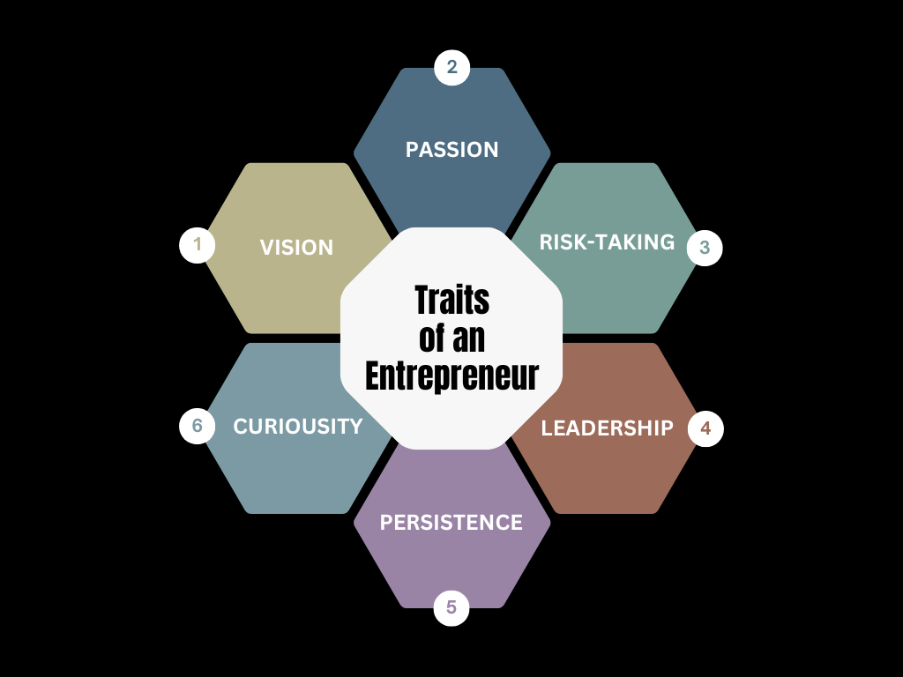
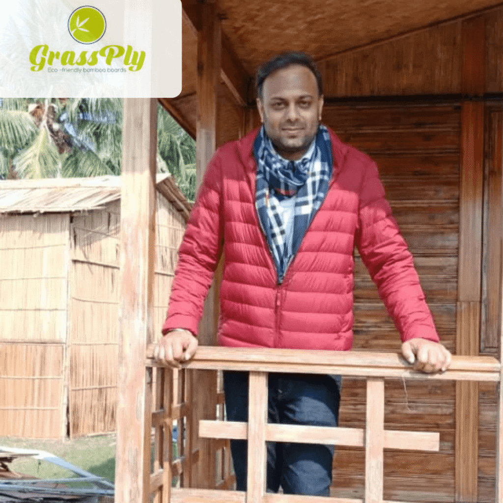
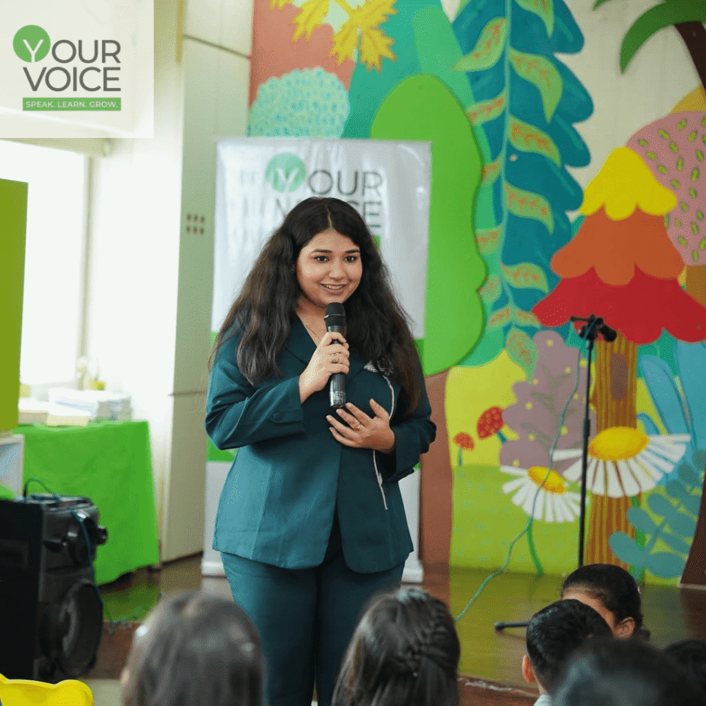
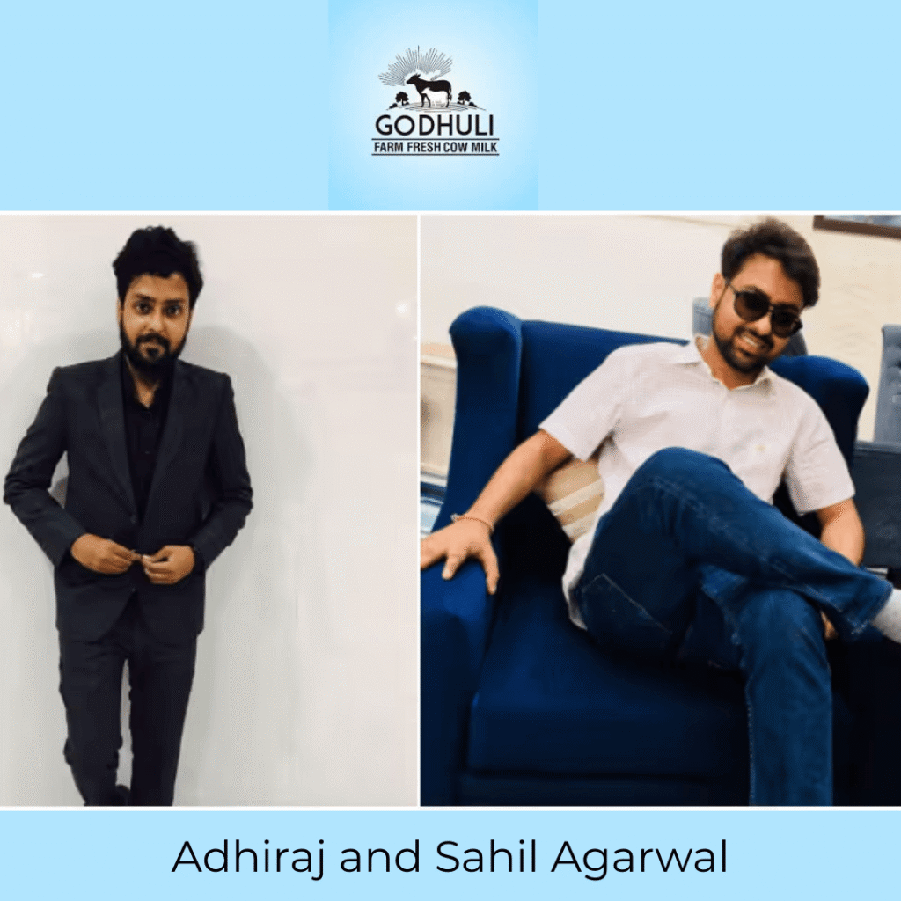
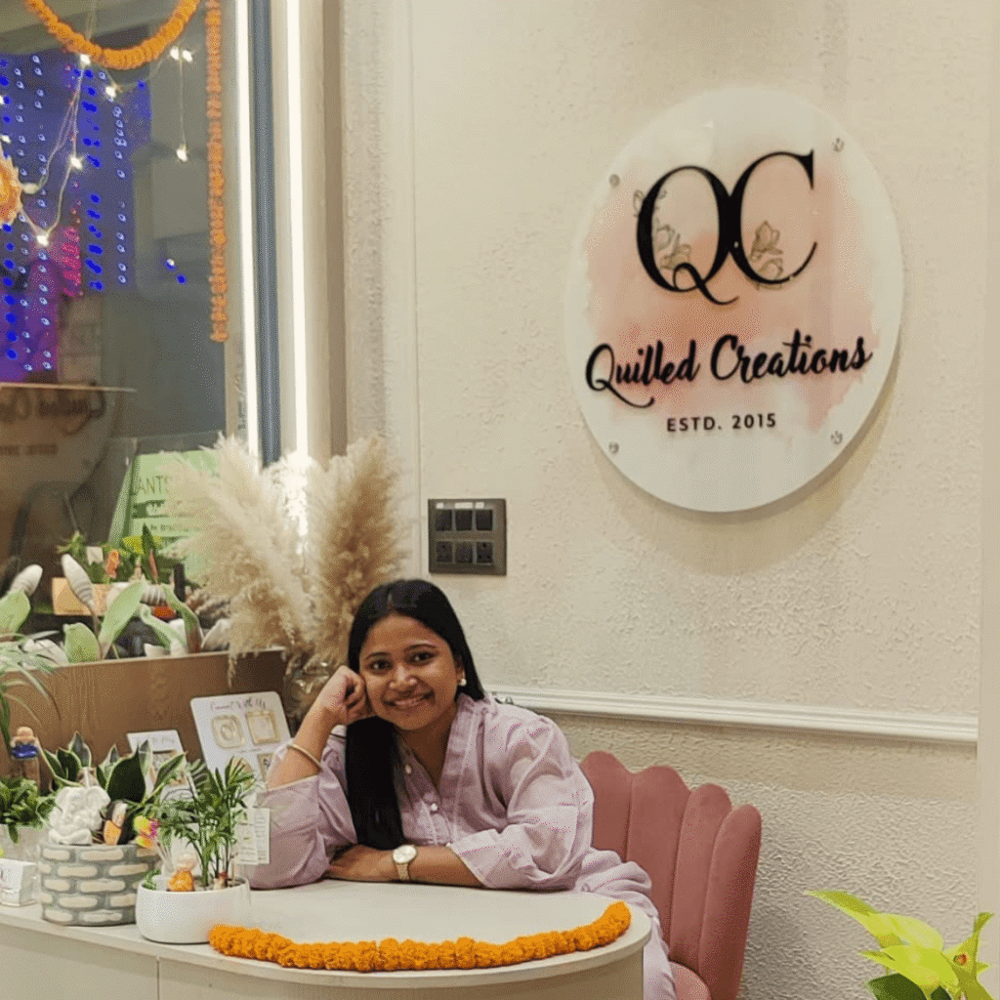
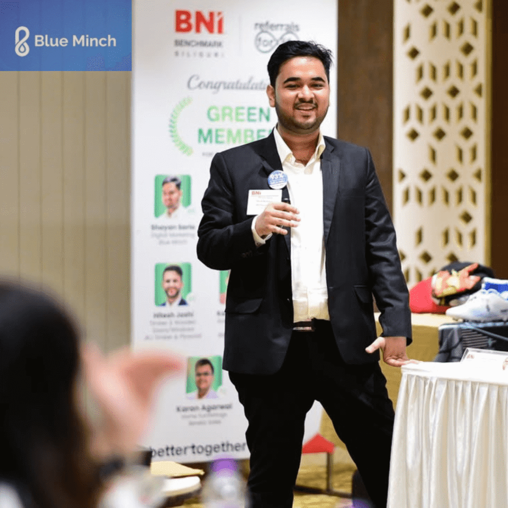

Have you ever had an idea that made you think, “This could actually work”? If yes, —then you already understand what entrepreneurship is all about.
That’s how it starts—with a thought, a gut feeling, a problem you just can’t stop thinking about. Entrepreneurship isn’t always about launching a big company or running after investors for fundraising. Sometimes, it’s just very simple, seeing a need around you and deciding to do something about it.
The word entrepreneur itself comes from the French verb “entreprendre”, meaning “to undertake.” And that’s exactly what entrepreneurs do—they take the initiative to turn ideas into action.

In today’s digital and fast-moving world, entrepreneurs are reshaping industries, questioning old systems, and creating jobs. And guess what? This wave of change isn’t limited to metros. Cities in Tier-2 and Tier-3 like Siliguri—yes, Siliguri—are quietly but powerfully becoming hubs of innovation and entrepreneurship.
Siliguri: A Growing Center of Entrepreneurship
Strategically placed at the base of the Himalayas, Siliguri links four international borders and serves as a major Eastern Indian commercial corridor. Rising connectivity, reasonably priced living, and a skilled workforce has made Siliguri a good base for businesses.
In this blog, let’s meet some of the inspiring entrepreneurs from Siliguri who are making a big difference in their own way.
Kausshal Dugarr- Founder of Teabox
Originally from Siliguri and a graduate of Singapore Management University, Kausshal Dugarr came home determined to give Indian tea the value it deserves worldwide. He started Teabox, a vertically integrated e-commerce company offering luxury teas straight from Indian gardens to customers all around the world in 2012.
Teabox was innovative in its supply chain, cutting the time from plucking to packing from months to only a few days. Soon after drawing financing from Ratan Tata, Accel Partners, and JAFCO Asia, the brand has now been distributed to around 100+ countries.
Mudit Agarwal- Founder of GrassPly

From Siliguri, Mudit Agarwal is changing how India sees bamboo. With GrassPly, he’s turning what was once seen as “poor man’s timber” into “green gold.”
After working in his uncle’s bamboo factory in Arunachal Pradesh, Mudit was inspired to start GrassPly in 2013 with just ₹1 lakh. Today, GrassPly earns ₹5.5 crore annually, offers eco-friendly products like bamboo boards, flooring, and prefab structures, and is building a modern factory to boost production.
With a network of 25+ dealers across India and big plans for bamboo charcoal and cane furniture, GrassPly is on a mission to make bamboo the future of sustainable living in India.
Rounak & Chaman Garg- Founders of Sohum Linen
Founded in 2020, Sohum Linen was born when 2 young entrepreneurs discovered a gap in the hotel linen market. With their research, they realized that most hotels struggled to find quality linens at reasonable prices due to limited local options. Determined to solve this, they spent nearly a year researching, setting up manufacturing, and building a brand that could offer premium linens to different hotel needs.
Since shipping their first order in 2021 with a small team and minimal budget, Sohum Linen has supplied over 1000 hotels across India and sold 1 lakh+ units. With the recent launch of their B2C website and plans to enter the export market, they aim to bring luxury linen solutions to both local hotels and also worldwide.
Amit Agrawal- Inventor of UpCart & The Neon World
Amit Agrawal developed UpCart, a cart meant to easily transfer things over stairs with less effort. At the age of 21, he gained National recognition for his creation from PM Narendra Modi, who hailed him as among India’s Top 10 Young Entrepreneurs in 2017 and he is also the winner of Nasscom E-Summit, 2016.
Amit’s creation solved a real-world problem, especially for delivery workers, senior citizens, and households needing to carry heavy items across levels. His innovation was not just clever—it was practical and needed. He then, also founded “The Neon World” in Siliguri to provide good quality neon sign boards across India.
Muskan Kandoi – Founder of Your Voice

Muskan Kandoi, a Public Speaking Coach, founded Your Voice with a vision that public speaking is a life skill, essential for everyone, not just for professionals or students.
Your Voice is an ISO certified public speaking institute offering soft skill and communication training across the age group of 3 to 14 years at affordable subscription rates so that everyone can easily afford it.
To know more about her journey, watch our Episode 3 of Local Braand Story on instagram.
Anjali Agarwal – Founder of It’s All About Gifting

Back in 2014, when the idea of customized corporate gifting wasn’t even common, Anjali Agarwal saw potential in making gifting more thoughtful, personalized, and memorable. That’s how “It’s All About Gifting” was born.
Today, Anjali ships personalized gifts to over 45 countries, catering to a wide range of occasions and corporate needs.
To know more about her journey, watch our Episode 2 of Local Braand Story on Instagram.
Adhiraj and Sahil Agarwal – Founder of Godhuli Milk

When the declining quality of milk became a personal issue in his hometown in Siliguri, Adhiraj and Sahil founded Godhuli Milk with a simple mission to provide pure and hygienic milk to the residents of Siliguri.
By following the “farm-to-doorstep” policy, using automotive processes and eliminating the middlemen, Godhuli makes sure that the customer receives milk with zero contamination.
Nikasha Agarwal- Founder of Quilled Creations

Nikasha is the founder of Quilled Creations, a walk-in studio in Siliguri which offers boutique gifting solutions, trousseau packing, and customised gifts for all occasions.
She caters to gifting solutions for weddings, festivals, and more. Her work stands out for its detail, aesthetics, and personal touch—something that’s earned her a loyal client base in and around Siliguri.
Sandeep Ghosal- Bright Academy
Bright Academy was founded in 2004 by Sandeep Ghosal when he saw the need for quality early education in North Bengal. With a focus on activity-based learning and personal attention, it has now secured a place among India’s top 100 preschools.
To expand its impact, Bright Academy has adopted the franchise model to spread its presence across Siliguri and Jalpaiguri with a mission to become North Bengal’s leading pre-school chain.
Abhishek Agarwal – Siliguri Times
Abhishek Agarwal is the Director of Siliguri Times, a prominent local news portal that offers real-time coverage of current events across North Bengal and Sikkim in English, Bengali, Hindi and Nepali. He founded the platform when he was just 21, starting with a monthly magazine before expanding into a multi-language social media news page.
Through his leadership, Siliguri Times has become a go-to source for regional news, helping people stay informed and connected.
Shayan Saria – Blueminch

Shayan Saria is an example of how ambition and creativity can fuel entrepreneurial success right from Siliguri. As the Founder & CEO of BlueMinch, a digital marketing agency rooted in the city, he has built a company that offers branding, content creation, and social media management — driving growth not just for local businesses, but for clients across India. What makes his journey particularly inspiring is how he has blended deep strategic thinking with a hands‑on, execution-focused mindset.
Under his leadership, BlueMinch has grown to become one of Siliguri’s most respected digital firms, with additional offices in Kolkata, Guwahati and Gangtok, proving that innovation can indeed emerge from the hills of North Bengal.
Srijana Chhetri & Umang Tamang – Cogito Digital
Seeing the growing demand for creative and reliable digital services, Srijana Chhetri and Umang Tamang identified a gap in the market and co-founded Cogito Digital to bridge it.
With a focus on modern branding and strategic content solutions, they helped build the agency from an idea into a service-driven platform for businesses looking to grow online.
Their ability to spot opportunities and turn them into meaningful digital solutions is what defines their entrepreneurial journey.
Braand School
Braand School is a dynamic educational institute which provides courses in skill-based education such as Digital Marketing, Graphic Design, Branding, UI/UX, and much more. The focus is on “learning by doing” approach that encourages teamwork, creativity, and problem-solving, helping students get a feel of what it’s like to work in the real world or start something of their own.
Siliguri may not be the first name that comes to mind when we talk about entrepreneurship, but it’s quietly building a strong identity of its own.
With growing demand, better infrastructure, and more local support, Siliguri is becoming a great place to start a business—whether it’s a small idea or something that can grow into something big.
What’s even more exciting is the growing support system here. Events like Business n Buddies, TechStars Startup Weekend, and startup fests by local colleges and events organized by various businesses are giving budding entrepreneurs a platform to connect, learn, and grow.
And, hence, the spirit of entrepreneurship here is not only growing but getting stronger with each passing day.